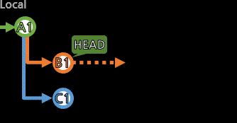
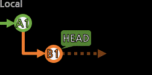

[add/reset]

커밋에 포함시킬 작업내역을 추가하거나 제거한다.
commit은 Enter키 정도일 뿐이고,
실질적으로 add가 커밋의 내용을 구성하는 부분.
커밋을 위한 작업내역들을 추가시킬 때 필요한 용어와 개념들이 있다.
ㆍTrack/Untrack: 파일을 추적/추적해제 함.
추적 중인 파일은 저장소에서 유의미한 파일로,
우리에게 변동사항을 알려주고 관리한다.
(Untrack은 이제 저장소에서 파일을 쓰지 않으려고 아예 제외시키는 것)
ㆍStage/Unstage: 작업내역을 반영/반영해제 함.
커밋을 만들 때 포함되도록 작업내역을 반영시키거나,
반영된 작업내역을 뺄 수 있음.
(Unstage는 이번 커밋에는 포함시키지 않으려고 다음으로 미루는 것)
Track과 관련하여 저장소에 .gitignore텍스트 파일을 둘 수 있다.
내부에 이름이나 확장자, 경로 등을 적어두어
조건을 만족하는 파일은 항상 우선적으로 무시하도록 한다.
새로운 파일이 있을 때마다 Untrack하는 것이 아니라,
이 파일로 무조건 제외될 종류의 파일을 설정할 수 있다.
> git status
On branch a01<---- 로컬브랜치
Your branch is up to date with 'origin/a01'.<---- 만약 리모트브랜치와 연동되어 있다면, 리모트브랜치와의 차이를 알려준다.
Changes to be committed:<---- 커밋에 추가되기로(Stage) 한 항목
(use "git reset HEAD <file>..." to unstage)
new file: 001.txt
new file: 002.txt
deleted: 003.txt
renamed: 005.txt -> 004.txt
Changes not staged for commit:<---- 커밋에 아직 추가되지는 않음. 하지만 추적(Track) 중이라 변동사항을 감지.
(use "git add <file>..." to update what will be committed)
(use "git checkout -- <file>..." to discard changes in working directory)
modified: 002.txt
Untracked files:<---- 추적 중이지 않은 파일들
(use "git add <file>..." to include in what will be committed)
006.txt
git status로 현재 작업 상태를 알 수 있다.
추적(Track) 중인 파일 기준으로, 다음과 같이 상태를 알려준다.
ㆍnew file: 추가된 파일
ㆍmodified: 수정된 파일
ㆍdeleted: 삭제된 파일
ㆍrenamed: 이름이 변경된 파일
모든 변동사항의 기준은 가장 최근에 git add(Stage) 했던 당시를 기준으로 한다.
즉, 커밋에 추가하기로 하는건, git add할 당시의 상태인 것이지, 파일 자체가 아니다.
그래서 위의 응답을 보면, 002.txt가 Staged에도 Unstaged에도 둘 다 있는 것을 알 수 있는데,
002.txt를 생성하고 한 번 git add 002.txt를 하고
002.txt를 수정한다면 위처럼 두 곳에 나타난다.
한 번 더 git add하면 수정사항이 포함되어 반영될 것이고, 그렇지 않으면 딱 했던 것까지만 반영되기로 한다.
ㆍUntracked→Tracked: git add 파일경로... (+Stage까지도 진행)
ㆍTracked→Untracked: git rm --cached 파일경로... (로컬엔 남아도 원격엔 파일을 지우겠다는 뜻)
ㆍUnstaged→Staged: git add 파일경로...
ㆍStaged→Unstaged: git reset HEAD 파일경로...
ㆍ로컬 파일 변동내용(작업내용) 삭제: git checkout -- 파일경로... (아예 작업내용 유실됨 주의!)
ㆍ로컬 파일 변동내용(작업내용) 백업: git stash [push]

git diff로는 이전 git add당시와 현재를 비교할 수 있다(Unstaged의 상세 내용을 확인할 수 있다).
> git diff
diff --git a/002.txt b/002.txt
index e69de29..4c479de 100644
--- a/002.txt
+++ b/002.txt<---- 002.txt 파일에 내용이 추가되어 있음
@@ -0,0 +1 @@
+apple<---- 파일 내부에 apple이라는 내용이 추가되어 있음
이제 git commit을 하면 커밋이 생성된다.
